Ibiza Voice
Interviews, reviews and features for Ibiza Voice. 23 pieces from the deep archive.
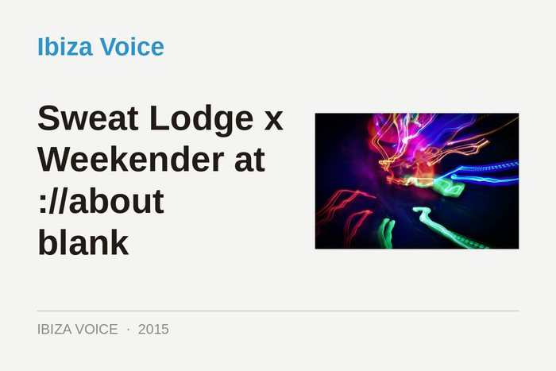
Sweat Lodge x Weekender at ://about blank
27 April 2015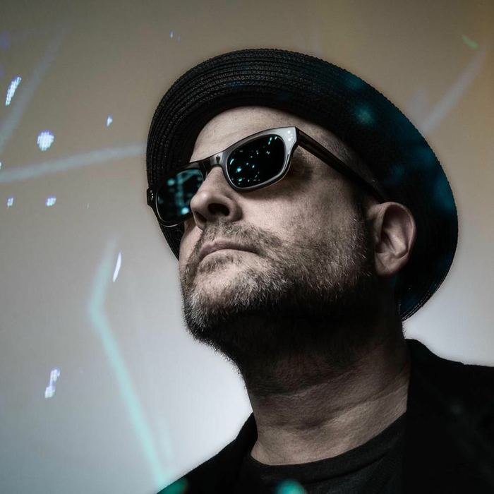
Blue Six: “Record labels seem a bit anachronistic in the ‘post-records’ world”
13 January 2015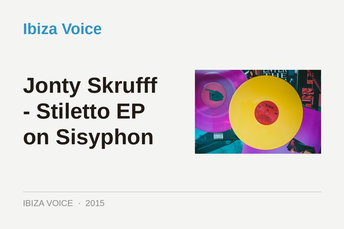
Jonty Skrufff - Stiletto EP on Sisyphon
12 January 2015Oxia: "I brought the night alive again & relived my sentiments of when I played the club"
17 December 2014Oliver Huntemann: “The idea is to capture a night in the club, like a photo in an album.”
27 November 2014Compilation of the Month: Watergate 17: Pan-Pot
8 October 2014Oliver Deutschamnn - FINAL EP on Falkplatz
8 September 2014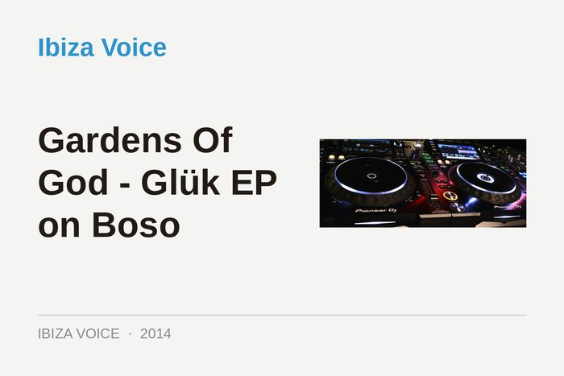
Gardens Of God - Glük EP on Boso
3 September 2014Robert Dietz & Tuccillo - Kushtraxx EP on Holic Trax
21 August 2014Smiley Fingers... In The Groove
6 August 2014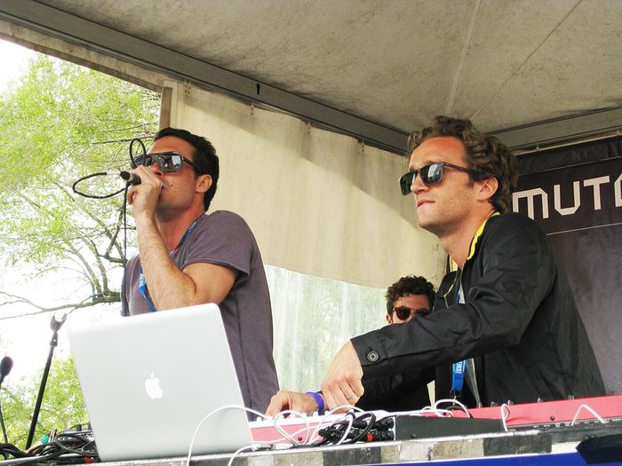
Benoit & Sergio - Your Darkness EP on Visionquest
24 July 2014Meet Producer & DJ John Dimas
21 July 2014Various Artists - Nutek Ibiza Vol 3 EP on Nutek
17 July 2014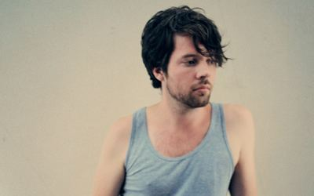
DIVA - Omni EP on New Kanada
18 June 2014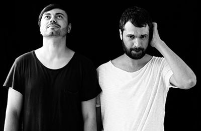
Livio & Roby - Nici Cu La EP on Memoria
17 June 2014Anthony Collins - Natural History Exhibit F EP on Natural History
19 March 2014Psychemagik feat. Renegade - Black Noir Schwarz EP on Crosstown Rebels
18 March 2014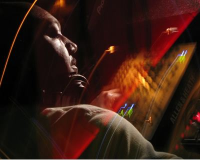
Rick Wade - Sweet Life EP on FINA Records
5 February 2014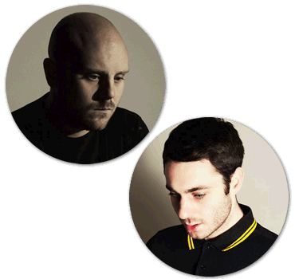
Huxley & Sam Russo - Dont Undastand Remixes EP on Leftroom
4 February 2014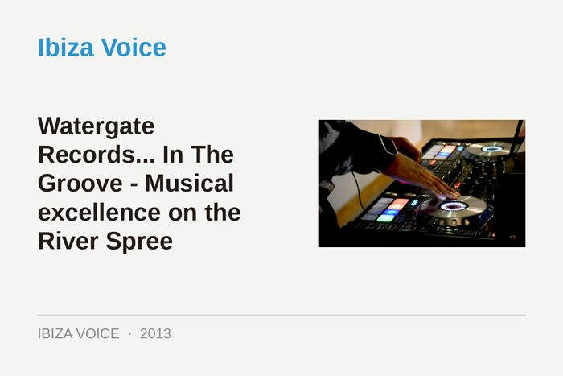
Watergate Records... In The Groove - Musical excellence on the River Spree
16 October 2013Compilation Of The Month - Guy J Presents Balance
10 July 2013Compilation Of The Month - Balance 023 Mixed By Radio Slave
30 April 2013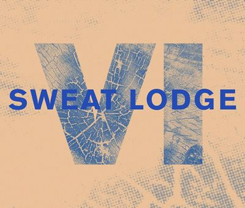
Sweat Lodge is celebrating 6 years
10 April 2013